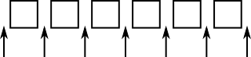

Section 10.2
Lists and Sets
In the previous section, we looked at the general properties of collection classes in Java. In this section, we look at some specific collection classes and how to use them. These classes can be divided into two main categories: lists and sets. A list consists of a sequence of items arranged in a linear order. A list has a definite order, but is not necessarily sorted into ascending order. A set is a collection that has no duplicate entries. The elements of a set might or might not be arranged into some definite order. I will also briefly discuss a third category of collection known as a "priority queue."
10.2.1 ArrayList and LinkedList
There are two obvious ways to represent a list: as a dynamic array and as a linked list. We've encountered these already in Section 7.3 and Section 9.2. Both of these options are available in generic form as the collection classes java.util.ArrayList and java.util.LinkedList. These classes are part of the Java Collection Framework. Each implements the interface List<T>, and therefore the interface Collection<T>. An object of type ArrayList<T> represents an ordered sequence of objects of type T, stored in an array that will grow in size whenever necessary as new items are added. An object of type LinkedList<T> also represents an ordered sequence of objects of type T, but the objects are stored in nodes that are linked together with pointers.
Both list classes support the basic list operations that are defined in the interface List<T>, and an abstract data type is defined by its operations, not by its representation. So why two classes? Why not a single List class with a single representation? The problem is that there is no single representation of lists for which all list operations are efficient. For some operations, linked lists are more efficient than arrays. For others, arrays are more efficient. In a particular application of lists, it's likely that only a few operations will be used frequently. You want to choose the representation for which the frequently used operations will be as efficient as possible.
Broadly speaking, the LinkedList class is more efficient in applications where items will often be added or removed at the beginning of the list or in the middle of the list. In an array, these operations require moving a large number of items up or down one position in the array, to make a space for a new item or to fill in the hole left by the removal of an item. In terms of asymptotic analysis (Section 8.5), adding an element at the beginning or in the middle of an array has run time Θ(n), where n is the number of items in the array. In a linked list, nodes can be added or removed at any position by changing a few pointer values, an operation that has run time Θ(1). That is, the operation takes only some constant amount of time, independent of how many items are in the list.
On the other hand, the ArrayList class is more efficient when random access to items is required. Random access means accessing the k-th item in the list, for any integer k. Random access is used when you get or change the value stored at a specified position in the list. This is trivial for an array, with run time Θ(1). But for a linked list it means starting at the beginning of the list and moving from node to node along the list for k steps, an operation that has run time Θ(k).
Operations that can be done efficiently for both types of lists include sorting and adding an item at the end of the list.
All lists implement the methods from interface Collection<T> that were discussed in Subsection 10.1.4. These methods include size(), isEmpty(), add(T), remove(Object), and clear(). The add(T) method adds the object at the end of the list. The remove(Object) method involves first finding the object, which uses linear search and is not very efficient for any list since it involves going through the items in the list from beginning to end until the object is found. The interface List<T> adds some methods for accessing list items according to their numerical positions in the list. Suppose that list is an object of type List<T>. Then we have the methods:
- list.get(index) — returns the object of type T that is at position index in the list, where index is an integer. Items are numbered 0, 1, 2, ..., list.size()-1. The parameter must be in this range, or an IndexOutOfBoundsException is thrown.
- list.set(index,obj) — stores the object obj at position number index in the list, replacing the object that was there previously. The object obj must be of type T. This does not change the number of elements in the list or move any of the other elements.
- list.add(index,obj) — inserts an object obj into the list at position number index, where obj must be of type T. The number of items in the list increases by one, and items that come after position index move down one position to make room for the new item. The value of index must be in the range 0 to list.size(), inclusive. If index is equal to list.size(), then obj is added at the end of the list.
- list.remove(index) — removes the object at position number index, and returns that object as the return value of the method. Items after this position move up one space in the list to fill the hole, and the size of the list decreases by one. The value of index must be in the range 0 to list.size()-1.
- list.indexOf(obj) — returns an int that gives the position of obj in the list, if it occurs. If it does not occur, the return value is -1. The object obj can be of any type, not just of type T. If obj occurs more than once in the list, the index of the first occurrence is returned.
These methods are defined both in class ArrayList<T> and in class LinkedList<T>, although some of them—such as get and set—are only efficient for ArrayLists. The class LinkedList<T> adds a few additional methods, which are not defined for an ArrayList. If linkedlist is an object of type LinkedList<T>, then we have
- linkedlist.getFirst() — returns the object of type T that is the first item in the list. The list is not modified. If the list is empty when the method is called, an exception of type NoSuchElementException is thrown (the same is true for the next three methods as well).
- linkedlist.getLast() — returns the object of type T that is the last item in the list. The list is not modified.
- linkedlist.removeFirst() — removes the first item from the list, and returns that object of type T as its return value. The functions linkedlist.remove() and linkedlist.pop() are also defined, with the same meaning as removeFirst().
- linkedlist.removeLast() — removes the last item from the list, and returns that object of type T as its return value.
- linkedlist.addFirst(obj) — adds the obj, which must be of type T, to the beginning of the list. The function linkedlist.push(obj) has the same meaning.
- linkedlist.addLast(obj) — adds the object obj, which must be of type T, to the end of the list. This is exactly the same as linkedlist.add(obj) but is defined to keep the naming consistent.
There is some redundancy here, apparently to make it easy to use a LinkedList as if it were a stack or a queue. (See Section 9.3.) For example, we can use a LinkedList as a stack by using the methods named push() and pop(), or as a queue by using add() and remove() to implement the enqueue and dequeue operations.
If list is an object of type List<T>, then the method list.iterator(), defined in the interface Collection<T>, returns an Iterator that can be used to traverse the list from beginning to end. However, for Lists, there is a special type of Iterator, called a ListIterator, which offers additional capabilities. ListIterator<T> is an interface that extends the interface Iterator<T>. The method list.listIterator() returns an object of type ListIterator<T>.
A ListIterator has the usual Iterator methods, hasNext(), next(), and remove(), but it also has methods hasPrevious(), previous(), add(obj), and set(obj) that make it possible to move backwards in the list, to add an item at the current position of the iterator, and to replace one of the items in the list. To understand how these work, it's best to think of an iterator as pointing to a position between two list elements, or at the beginning or end of the list. In this diagram, the items in a list are represented by squares, and arrows indicate the possible positions of an iterator:

If iter is of type ListIterator<T>, then iter.next() moves the iterator one space to the right along the list and returns the item that the iterator passes as it moves. The method iter.previous() moves the iterator one space to the left along the list and returns the item that it passes. The method iter.remove() removes an item from the list; the item that is removed is the item that the iterator passed most recently in a call to either iter.next() or iter.previous(). The method iter.set(obj) works similarly; it replaces the item that would be removed by iter.remove(). There is also a method iter.add(obj) that adds the specified object to the list at the current position of the iterator (where obj must be of type T). This can be between two existing items or at the beginning of the list or at the end of the list.
(By the way, the lists that are used in class LinkedList<T> are doubly linked lists. That is, each node in the list contains two pointers—one to the next node in the list and one to the previous node. This makes it possible to efficiently implement both the next() and previous() methods of a ListIterator. Also, to make the addLast() and getLast() methods of a LinkedList efficient, the class LinkedList<T> includes a "tail pointer" that points to the last node in the list.)
As an example of using a ListIterator, suppose that we want to maintain a list of items that is always sorted into increasing order. When adding an item to the list, we can use a ListIterator to find the position in the list where the item should be added. Once the position has been found, we use the same list iterator to place the item in that position. The idea is to start at the beginning of the list and to move the iterator forward past all the items that are smaller than the item that is being inserted. At that point, the iterator's add() method can be used to insert the item. To be more definite, suppose that stringList is a variable of type List<String>. Assume that the strings that are already in the list are stored in ascending order and that newItem is a string that we would like to insert into the list. The following code will place newItem in the list in its correct position, so that the modified list is still in ascending order:
ListIterator<String> iter = stringList.listIterator();
// Move the iterator so that it points to the position where
// newItem should be inserted into the list. If newItem is
// bigger than all the items in the list, then the while loop
// will end when iter.hasNext() becomes false, that is, when
// the iterator has reached the end of the list.
while (iter.hasNext()) {
String item = iter.next();
if (newItem.compareTo(item) <= 0) {
// newItem should come BEFORE item in the list.
// Move the iterator back one space so that
// it points to the correct insertion point,
// and end the loop.
iter.previous();
break;
}
}
iter.add(newItem);
Here, stringList might be of type ArrayList<String> or of type LinkedList<String>. The algorithm that is used to insert newItem into the list will be about equally efficient for both types of lists, and it will even work for other classes that implement the interface List<String>. You would probably find it easier to design an insertion algorithm that uses array-like indexing with the methods get(index) and add(index,obj). However, that algorithm would be horribly inefficient for LinkedLists because random access is so inefficient for linked lists. (By the way, the insertion algorithm works when the list is empty. It might be useful for you to think about why this is true.)
10.2.2 Sorting
Sorting a list is a fairly common operation, and there should really be a sorting method in the List interface. There is not, presumably because it only makes sense to sort lists of certain types of objects. However, methods for sorting lists are available as static methods in the class java.util.Collections. This class contains a variety of static utility methods for working with collections. The methods are generic; that is, they will work for collections of objects of various types. (You have already seen similar methods for arrays in the Arrays class.) Suppose that list is of type List<T>. The command
Collections.sort(list);
can be used to sort the list into ascending order. The items in the list should implement the interface Comparable<T> (see Subsection 10.1.6). The method Collections.sort() will work, for example, for lists of String and for lists of any of the wrapper classes such as Integer and Double. There is also a sorting method that takes a Comparator as its second argument:
Collections.sort(list,comparator);
In this method, the comparator will be used to compare the items in the list. As mentioned in the previous section, a Comparator is an object that defines a compare() method that can be used to compare two objects. We'll see an example of using a Comparator in Section 10.4.
The sorting method that is used by Collections.sort() is the so-called "merge sort" algorithm, which has both worst-case and average-case run times that are Θ(n*log(n)) for a list of size n. Although the average run time for MergeSort is a little slower than that of QuickSort, its worst-case performance is much better than QuickSort's. (QuickSort was covered in Subsection 9.1.3.) MergeSort also has a nice property called "stability" that we will encounter at the end of Subsection 10.4.3.
The Collections class has at least two other useful methods for modifying lists. Collections.shuffle(list) will rearrange the elements of the list into a random order. Collections.reverse(list) will reverse the order of the elements, so that the last element is moved to the beginning of the list, the next-to-last element to the second position, and so on.
Since an efficient sorting method is provided for Lists, there is no need to write one yourself.
10.2.3 TreeSet and HashSet
A set is a collection of objects in which no object occurs more than once. Sets implement all the methods in the interface Collection<T>, but do so in a way that ensures that no element occurs twice in the set. For example, if set is an object of type Set<T>, then set.add(obj) will have no effect on the set if obj is already an element of the set. Java has two classes that implement the interface Set<T>: java.util.TreeSet and java.util.HashSet.
In addition to being a Set, a TreeSet has the property that the elements of the set are arranged into ascending sorted order. An Iterator (or a for-each loop) for a TreeSet will always visit the elements of the set in ascending order.
A TreeSet cannot hold arbitrary objects, since there must be a way to determine the sorted order of the objects it contains. Ordinarily, this means that the objects in a set of type TreeSet<T> should implement the interface Comparable<T> and that obj1.compareTo(obj2) should be defined in a reasonable way for any two objects obj1 and obj2 in the set. Alternatively, an object of type Comparator<T> can be provided as a parameter to the constructor when the TreeSet is created. In that case, the compare() method of the Comparator will be used to compare objects that are added to the set.
A TreeSet does not use the equals() method to test whether two objects are the same. Instead, it uses the compareTo() (or compare()) method. This can be a problem. Recall from Subsection 10.1.6 that compareTo() can consider two objects to be the same for the purpose of the comparison even though the objects are not equal. For a TreeSet, this means that only one of those objects can be in the set. For example, if the TreeSet contains mailing addresses and if the compareTo() method for addresses just compares their zip codes, then the set can contain only one address in each zip code. Clearly, this is not right! But that only means that you have to be aware of the semantics of TreeSets, and you need to make sure that compareTo() is defined in a reasonable way for objects that you put into a TreeSet. This will be true, by the way, for Strings, Integers, and many other built-in types, since the compareTo() method for these types considers two objects to be the same only if they are actually equal.
In the implementation of a TreeSet, the elements are stored in something similar to a binary sort tree. (See Subsection 9.4.2.) However, the data structure that is used is balanced in the sense that all the leaves of the tree are at about the same distance from the root of the tree. This ensures that all the basic operations—inserting, deleting, and searching—are efficient, with worst-case run time Θ(log(n)), where n is the number of items in the set.
The fact that a TreeSet sorts its elements and removes duplicates makes it very useful in some applications. Exercise 7.6 asked you to write a program that would read a file and output an alphabetical list of all the words that occurred in the file, with duplicates removed. The words were to be stored in an ArrayList, so it was up to you to make sure that the list was sorted and contained no duplicates. The same task can be programmed much more easily using a TreeSet instead of a list. A TreeSet automatically eliminates duplicates, and an iterator for the set will automatically visit the items in the set in sorted order. An algorithm for the program, using a TreeSet, would be:
TreeSet<String> words = new TreeSet<String>(); while there is more data in the input file: Let word = the next word from the file Convert word to lower case words.add(word) // Adds the word only if not already present. for ( String w : words ) // for each String w in words Output w // words are output in sorted order
If you would like to see a complete, working program, you can find it in the file WordListWithTreeSet.java.
As another example, suppose that coll is any Collection of Strings. (This would also work for any other type for which compareTo() is properly defined.) We can use a TreeSet to sort the items of coll and remove the duplicates simply by saying:
TreeSet<String> set = new TreeSet<String>(); set.addAll(coll);
The second statement adds all the elements of the collection to the set. Since it's a Set, duplicates are ignored. Since it's a TreeSet, the elements of the set are sorted. If you would like to have the data in some other type of data structure, it's easy to copy the data from the set. For example, to place the answer in an ArrayList, you could say:
TreeSet<String> set = new TreeSet<String>(); set.addAll(coll); ArrayList<String> list = new ArrayList<String>(); list.addAll(set);
Now, in fact, every one of Java's collection classes has a constructor that takes a Collection as an argument. All the items in that Collection are added to the new collection when it is created. So, if coll is of type Collection<String>, then "new TreeSet<String>(coll)" creates a TreeSet that contains the same elements as coll, but with duplicates removed and in sorted order. This means that we can abbreviate the four lines in the above example to the single command:
ArrayList<String> list = new ArrayList<>( new TreeSet<>(coll) );
This makes a sorted list of the elements of coll with no duplicates. This is a nice example of the power of generic programming. (Note that the type parameter, String, is optional in the two constructors in this example, since it can be deduced by the compiler.)
A HashSet stores its elements in a hash table, a type of data structure that I will discuss in the next section. The operations of finding, adding, and removing elements are implemented very efficiently in hash tables, even more so than for TreeSets. The elements of a HashSet are not stored in any particular order, and so do not need to implement the Comparable interface. (They do, however, need to define a proper "hash code," as we'll see in the next section.)
The equals() method is used to determine whether two objects in a HashSet are to be considered the same. An Iterator for a HashSet will visit its elements in what seems to be a completely arbitrary order, and it's even possible for the order to change when a new element is added. Use a HashSet instead of a TreeSet when the elements it contains are not comparable, or when the order is not important, or when the small advantage in efficiency is important.
A note about the mathematics of sets: In mathematical set theory, the items in a set are called members or elements of that set. Important operations include adding an element to a set, removing an element from a set, and testing whether a given entity is an element of a set. Operations that can be performed on two sets include union, intersection, and set difference. All these operations are defined in Java for objects of type Set, but with different names. Suppose that A and B are Sets. Then:
- A.add(x) adds the element x to the set A.
- A.remove(x) removes the element x from the set A.
- A.contains(x) tests whether x is an element of the set A.
- A.addAll(B) computes the union of A and B.
- A.retainAll(B) computes the intersection of A and B.
- A.removeAll(B) computes the set difference, A - B.
There are of course, differences between mathematical sets and sets in Java. Most important, perhaps, sets in Java must be finite, while in mathematics, most of the fun in set theory comes from working with infinity. In mathematics, a set can contain arbitrary elements, while in Java, a set of type Set<T> can only contain elements of type T. The operation A.addAll(B) acts by modifying the value of A, while in mathematics the operation A union B computes a new set, without changing the value of A or B. See Exercise 10.2 for an example of mathematical set operations in Java.
10.2.4 Priority Queues
A priority queue is an abstract data type that represents a collection of items, where each item has an assigned "priority" that allows any two items to be compared. Operations on a priority queue include add, which adds an item to the collection, and remove, which removes and returns an item from the collection that has the minimum priority among items currently in the collection. (Maximum priority would also be possible, but in Java's version, the remove operation removes a minimum priority item.)
A simple implementation of priority queue could be achieved by using a linked list to store the items in the queue in order of increasing priority. In that case, remove would simply remove and return the first item in the list. However, add would have to insert the new item into its correct position in the list, an operation with average run time Θ(n), where n is the number of items in the list. In fact, priority queues can be implemented so that both add and remove have run time Θ(log(n)), which is much more efficient. (The efficient implementation uses something called a "heap," which is not to be confused with the heap where objects are created. I will not discuss the implementation here.)
The parameterized class PriorityQueue<T> implements a priority queue of objects of type T. This class implements the interface Collection<T>. So, if pq is a PriorityQueue, then it has all the methods defined in that interface. But the essential priority queue operations are
- pq.add(obj) — adds obj to the priority queue, where obj must be an object of type T
- pq.remove() — removes and returns an item of minimal priority. The return value is an object of type T. Throws an exception if the queue is empty.
- pq.isEmpty() — tests whether the priority queue is empty.
You've probably noticed that I haven't yet mentioned how the priority of items in the priority queue are determined. The situation is much like sorting: We need to be able to compare any two items in the queue. As with sorting, there are two solutions. If the items implement the Comparable interface, then they can be compared using the compareTo() method from that interface. Alternatively, a Comparator object can be provided as a parameter to the PriorityQueue constructor. In that case, the Comparator's compare method will be used to compare items.
Classes such as String, Integer, and Date that implement Comparable can be used in a priority queue. For example, a PriorityQueue<String> can be used to sort strings into lexicographic order: Just add all the strings to the priority queue, then remove them one-by-one. Since items are removed from the queue in order of priority, they will be removed in lexicographic order. Earlier, I showed how to use a TreeSet to sort and remove duplicates from a collection. A PriorityQueue can be used in a similar way to sort a collection without removing duplicates. For example, if coll is of type Collection<String>, then the following code segment will print all the items from coll in order, including duplicates:
PriorityQueue<String> pq = new PriorityQueue<>();
pq.addAll( coll );
while ( ! pq.isEmpty() ) {
System.out.println( pq.remove() );
}
(Note, by the way, that we can't use an iterator or a for-each loop to print the items in this example, since iterators and for-each loops do not traverse a priority queue in ascending order.)
The sample program WordListWithPriorityQueue.java makes a sorted list of words from a file without removing duplicates, using a priority queue to hold the words. It is a minor modification of WordListWithTreeSet.java.
Although priority queues can be used for sorting, they have other natural applications. For example, consider the problem of scheduling "jobs" to be executed on a computer, where each job is assigned a priority and jobs with lower priority should always be executed before jobs with higher priority. Jobs can be placed into a priority queue as they are created. When the computer removes jobs from the queue for execution, they will be removed in order of increasing priority.